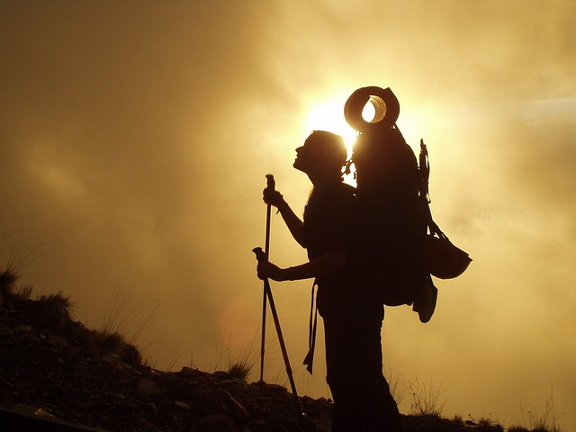

Safety Measures

Camping is a fun way to get family and friends together to enjoy the outdoors. Always be prepared for the unexpected. Do not take unnecessary chances. Do not be careless. Think before you act. Be prepared to administer basic first aid. The most effective way to prevent mishaps is to adequately prepare for the trip. Knowledge of the area, weather, terrain, limitations of your body can help to ensure a safe and enjoyable trip.
| General Tips | Trail Tips | Camping Tips | Trekking Tips | Ziplining Tips |
| Kayak, Canoeing and Rafting Tips | If you get LOST | Check list | First Aid Kit |
Trekking Tips

If you are heading for an adventurous and unforgettable trekking trip, do keep in mind certain trekking and mountaineering guidelines and tips. Following tips and guidelines cater useful and requisite information about every aspect of trekking including things to be carried and health precautions to be taken before beginning an adventurous trip.
- SAFETY GUIDE AND TIPS
To make your trip more adventurous and safe, do follow certain safety guidelines and tips mentioned below:-
- Before heading for your adventure trekking trip, do study weather forecast of that area. Avoid trekking during bad weather or adverse climatic situations.
- Newbies should always carry a raincoat or windsheeter with them. Climate can change frequently in several trekking points.
- Do carry multi-pocket carry bag engrafted with zipper closure and cushioned shoulder straps, especially for trekking trips.
- The bag should be spacious enough to carry all the important trekking essentials while trekking.
- Must keep a lighter, Swiss army knife, space blanket, water bottle and winter attire in your carry bag or pocket before heading for trekking.
- To prevent insect bite, do wear full sleeves shirts and full pants.
- Do carry sleeping bag and trekking rope of about 50 meters of length with you.
- A direction compass and topographical map is must while trekking in mountains.
- An ice cutting axe should always be carried if heading into snowy terrain.
- HEALTH GUIDE AND TIPS
- Accessories add grace to your personality. So during travel keep such accessories which are easy to carry and may add grace to your overall look.
- While planning your trekking trip, it is preferable to have a medical fitness check up done. It is most essential to be fit and fine before heading for trekking. You may also prefer to have medical precautions against diseases like malaria, cholera, tetanus, typhoid and hepatitis. Do arrange and carry medicines related to ailments from which you are previously suffering.
- If suffering from any kind of ailment, do carry proper prescribed medicines to prevent serious health problem including heatstroke, sever headache, cough, dehydration and hypothermia.
- Always wear proper trekking shoes while trekking. Uncomfortable pair of shoes can harshly hurt your feet and can lead to serious foot injuries while trekking. Therefore do spend some time to arrange proper and comfortable trekking shoes before heading for trekking tour.
- Choose those trekking shoes that are a half-size bigger than your regular shoes to allow space for some swelling caused while trekking and to hold heavier trekking socks.
- Do carry food items which carry larger amount of carbohydrates. Always take important medicine and first aid box with you.
- Do always cover your neck area, particularly in frequently changing weather .It can lead to serious neck problems and pains if left uncovered.
- Do wear thick woollen socks or stockings while trekking. Synthetic blended socks can be used for trekking purpose, as these socks are specially designed to preclude feet moisture.
- Proper health and fitness is must for every trekker. Therefore always try to be in proper and fine state of health.